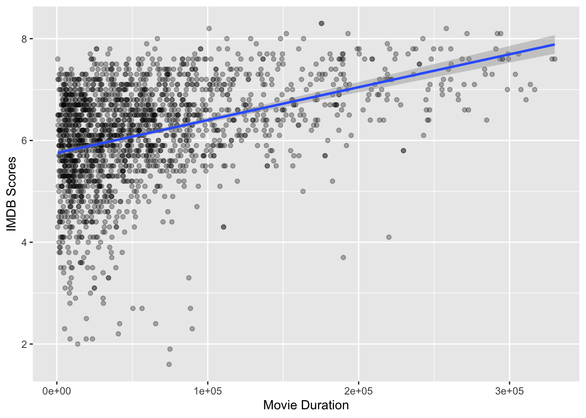
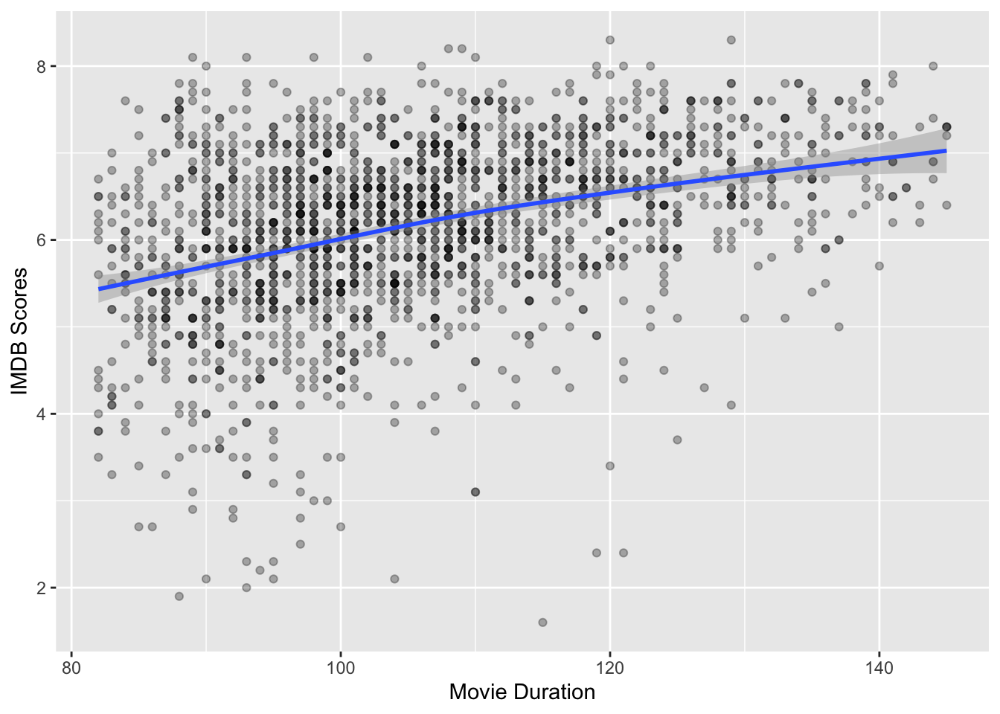
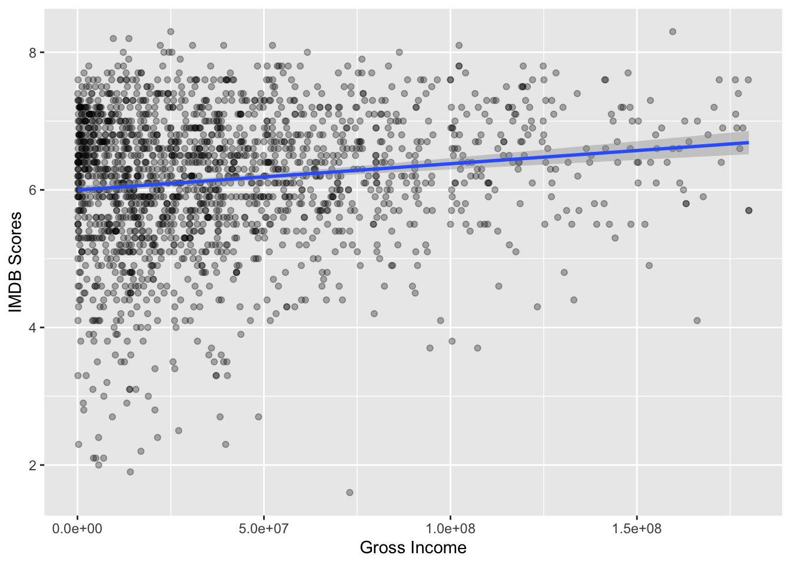
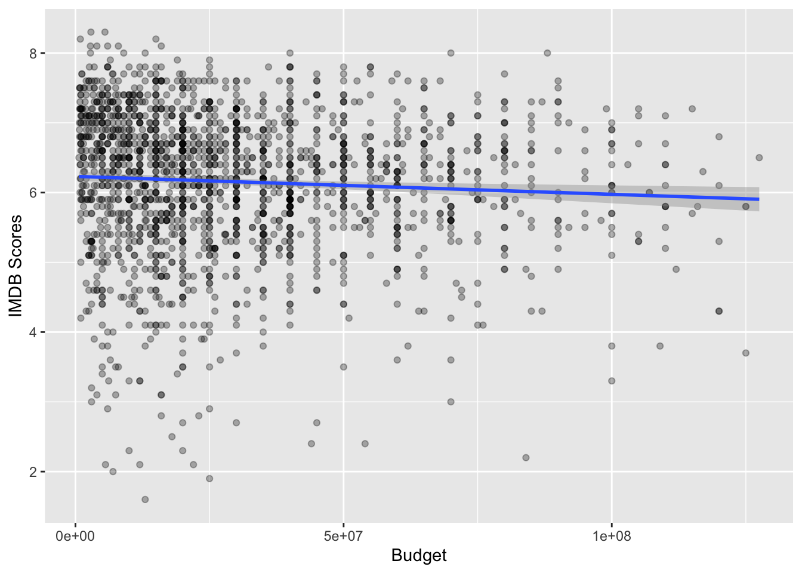
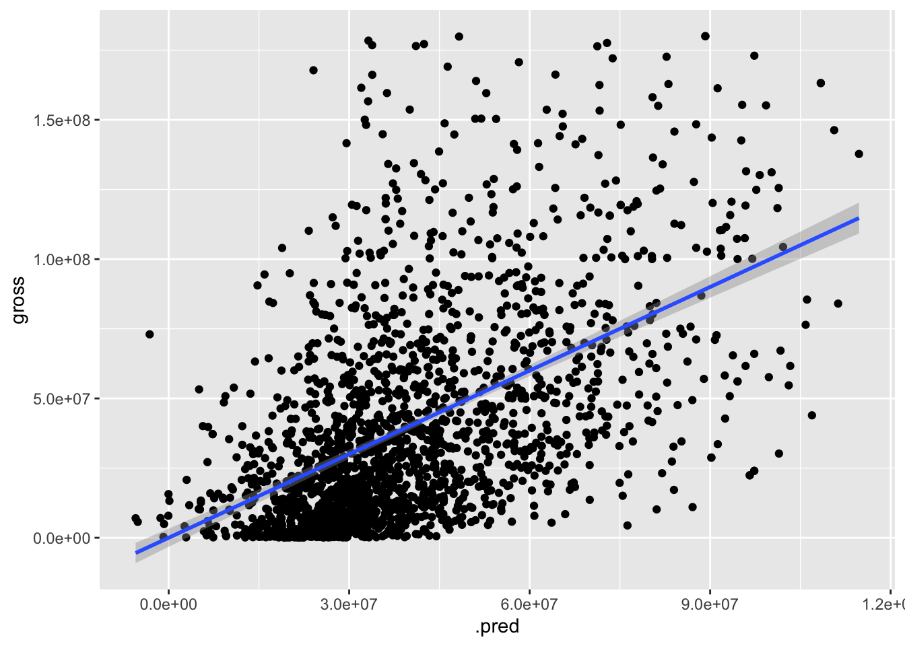
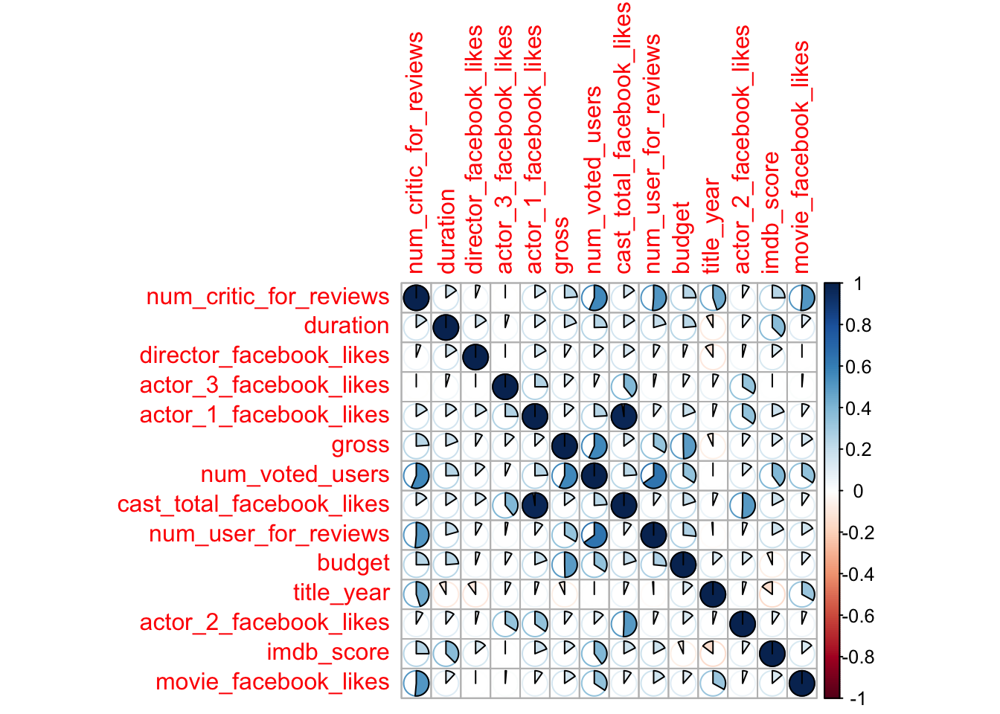
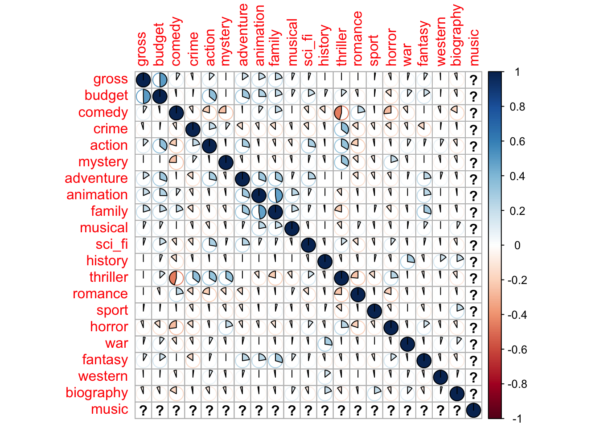

library(tidyverse)
library(infer)
library(tidymodels)
library(GGally)
library(ggfortify)
library(knitr)
opts_chunk$set(tidy.opts=list(width.cutoff=60),tidy=TRUE)
library(corrplot)1 Background and Significance
Cinema is a form of media that’s constantly reinventing itself, always exploring new genres and topics or even exploring older topics in a new form. The film industry is constantly looking at what makes a movie work, what makes it successful in a modern market; much analysis has been done on movie profit and other numerical variables, for example (Chen). As such, statistical analysis of the metadata behind the industry could prove to improve the development and financing process of creating a movie
The process of making a film, after the idea is already created, begins with a synopsis of the movie that’s then brought around by a lead producer to see if they can sell the idea. It’s only after this that funding can be acquired to actually produce the movie. Based on this short synopsis that presents the big ideas of the movie, the movie is evaluated, approved or denied for funding. Investors may be looking at what a “safe bet” for them is, what genre or buzzwords will get an audience excited to pay for a movie.
The aim of this study is to look at gross income as a response variable to a few explanatory variables. We will look at it as a response to the budget for the film, to the IMDB rating of the film, and to the duration. Within each of these relationships we will also look at which genres are associated with the gross income of the film, that is parsing out the individual contribution of a particular genre to how well the movie does at the box office. Going further, we will find out how accurately we can predict the gross income of the film factoring in its genre. A final research topic will explore the synergy between genres, looking at the difference between the gross income of films of one genre versus the gross income of films that incorporate multiple genres using the same numerical predictors.
2 Methods
2.1 Data Collection
This dataset comes from Kaggle and was collected in 2016. We found that the gross income variable (gross) and the budget variable (budget) are measured in local currencies, and it is hard to convert them into USD, so we decided to only look at US movies in this project for homogeneity in currency.
2.2 Variable Creation
Some important variables in this dataset includes budget, gross income, genres, and IMDB scores, which are related to the budget of the movie, gross income of the movie, the genres of the movie, and its score on IMDB respectively. We also extract partial strings from the original “genres” variable to create individual genres dummy variable including comedy, family, action, horror, and etc.
2.3 Analytic Methods
We use machine learning, specifically multiple linear regression, to predict the gross income of a film using multiple predictors. Here, the response variable is gross income with predictors including IMDB score, movie genre, budget, and duration. We then move to use feature engineering in order to look at nonlinear correlations between the variables in the data set. We split the dataset using the validation set method and use these models created by feature engineering to predict the accuracy of our model for the testing data set. We set the null hypothesis to be that gross income is not correlated to any of the predictors the predictor set of variables.
3 Results
In creating a correlation plot of all available variables, we visualize that some variables are strongly correlated with each other, causing a multicolliniarity. Therefore, we need to try out different models in order to solve this problems. In the 18 models that we created, Model 18 one turns out to have the best validation R-squared value of 0.53. Similarly, the R-squared for the entire training dataset is about 0.6 After verifying it with the testing dataset, we figure out that the R-squared value of Model 18 is 64%, which is decently good in predicting the gross income of a movie.
Among the variables, we find that actors’ facebook likes are highly correlated with one another. Additionally, budget of a movie and number of online reviews and users who voted for a movie is also highly correlated. Using multiple linear regression and looking at corresponding p-values for the genre coefficients, we found that on average and with a significance level of 0.05, the genres “Sci-Fi”, “Crime”, and “Fantasy” actually reduced the gross income of the movie. These coefficients were all negative and had respective p-values of 0.000035, 0.02, and 0.009. With this same method we found the variables “budget” and “num_voted_users” to positively contribute to gross income, with positive coefficients and respective p-values of approximately 0.
4 Discussion/Conclusions
The objective of this study was to look at gross income as a response variable to the budget for the film, to the IMDB rating of the film, the duration of the film, and the genre tag of the film. The final model fit to this dataset incorporated these predictors, but used many more in addition to these initial predictors thought to be significant at the start of this project. Since the response variable in question was gross income, since the concern is just on how much the film makes from box office proceedings, the use of feature engineering was chosen to have the best predictive power for the training data, as well as the testing data. The only caveat to this process is that the specific sums and products used to create our final model (Model 18) are uninterpretable. However, since this feature engineering facilitated a more desirable R-squared value in our training and testing sets, this process was valid in our analysis of gross income.
Our p-value for Model 18, 1.98e-40 << \(\alpha = 0.005\), suggests that this model is statistically significant, even though it only achieved a relatively low R-squared value of 0.641 (with an adjusted-R-squared value of 0.565). As prescribed by the p-value, we reject our null hypothesis that gross income is not correlated to any of the predictors the predictor set of variables with a p-value of 1.98e-40. However these results for correlation may be too low to be used in an investment setting, which may desire a much stronger correlation to ensure the most profit from their film. Still, all of this suggests that there is a relationship between the gross income of a film and the metadata included in our final model. Previous research consulted has reviewed individual metadata and their correlation to the revenue of the films in their data, but they didn’t use multiple predictors or feature engineering, an expansion that this project attempts to provide. Our results suggest that this approach, using many predictors, including qualitative information like film genre, to predict gross income, can go further in the film industry. Despite the fact that much of the “buzz” surrounding the film industry and the films they produce appears to be qualitative, it is possible to examine it in a quantitative sense using multiple linear regression modeling. If this process were continued with more data, with a greater focus on metadata on each film, possible investors could be given predictions based on preliminary information on a film and make an informed decision to fund a project.
[1], [2], [3], [4], [5], [6], [7], [8], [9], [10], [11], [12]
5 References:
[1]
Wickham, H., Averick, M., Bryan, J., Chang, W., McGowan, L., François, R., Grolemund, G., Hayes, A., Henry, L., Hester, J., Kuhn, M., Pedersen, T., Miller, E., Bache, S., Müller, K., Ooms, J., Robinson, D., Seidel, D., Spinu, V., Takahashi, K., Vaughan, D., Wilke, C., Woo, K. and Yutani, H. (2019). Welcome to the tidyverse. Journal of Open Source Software 4 1686.
[2]
Couch, S., Bray, A., Ismay, C., Chasnovski, E., Baumer, B. and Çetinkaya-Rundel, M. (2021). Infer: An r package for tidyverse-friendly statistical inference. Journal of Open Source Software 6 3661.
[3]
Ushey, K., Allaire, J., Wickham, H. and Ritchie, G. (2022). Rstudioapi: Safely access the RStudio API.
[4]
Wickham, H., Averick, M., Bryan, J., Chang, W., McGowan, L. D., François, R., Grolemund, G., Hayes, A., Henry, L., Hester, J., Kuhn, M., Pedersen, T. L., Miller, E., Bache, S. M., Müller, K., Ooms, J., Robinson, D., Seidel, D. P., Spinu, V., Takahashi, K., Vaughan, D., Wilke, C., Woo, K. and Yutani, H. (2019). Welcome to the tidyverse. 4 1686.
[5]
Kuhn, M. and Wickham, H. (2020). Tidymodels: A collection of packages for modeling and machine learning using tidyverse principles.
[6]
Couch, S. P., Bray, A. P., Ismay, C., Chasnovski, E., Baumer, B. S. and Çetinkaya-Rundel, M. (2021). Infer: An r package for tidyverse-friendly statistical inference. 6 3661.
[7]
Schloerke, B., Cook, D., Larmarange, J., Briatte, F., Marbach, M., Thoen, E., Elberg, A. and Crowley, J. (2021). GGally: Extension to ’ggplot2’.
[8]
Tang, Y., Horikoshi, M. and Li, W. (2016). Ggfortify: Unified interface to visualize statistical result of popular r packages. 8.
[9]
Xie, Y. (2022). Knitr: A general-purpose package for dynamic report generation in r.
[10]
[11]
Chen, A. W. (2018). A statistical analysis of gross revenue in movie industry.
[12]
James, G., Witten, D., Hastie, T. and Tibshirani, R. (2013). An introduction to statistical learning. Springer New York.
6 Appendix
6.1 Libraries
6.2 Dataset
# movie_raw_data <- read_csv('movie_metadata.csv')
movie_raw_data <- read_csv('https://raw.githubusercontent.com/turalsadigov/MATH_254/main/Datasets%20for%20projects/movie_metadata_trevor_raio.csv')6.3 Table of Variables in Dataset
| Variable | Explanation | |
|---|---|---|
| color | is the movie colored or black and white? | |
num_critic_ for_reviews |
number of critics for reviews on IMDB | |
| duration | the movie duration | |
| director_facebook_likes | number of likes that the director get on facebook (0s are missing data) | |
| actor_1_facebook_likes | number of likes that the actor with most likes have on facebook (0s are missing data) | |
| actor_2_facebook_likes | number of likes that the actor with second most likes have on facebook (0s are missing data) | |
| actor_3_facebook_likes | number of likes that the actor with third most likes have on facebook (0s are missing data) | |
| cast_total_facebook_likes | number of the total facebook likes of the casts | |
| gross | gross income of the movie | |
| genres | the genres of the movie (there maybe multiple genres for one movie) | |
| num_voted_users | number of users that voted on IMDB | |
| facenumber_in_poster | number of faces in the poster | |
| num_user_for_reviews | number of users for reviews on IMDB | |
| content_rating | the content rating of the movie | |
| budget | the budget of the movie | |
| title_year | the year that the movie was published | |
| imdb_scores | the IMDB scores of the movies | |
| aspect_ratio | aspect ratio of the movie | |
| movie_facebook_likes | number of likes that the movie got on facebook |
6.4 Cleaning
# Set so that long lines in R will be wrapped:
knitr::opts_chunk$set(tidy.opts=list(width.cutoff=80), tidy=TRUE)
# This part clears the outliers and focuses on the main part of the data by
# excluding the lowest 5% and the highest 5% of the data in each variable
# Create a range for each variable that excludes the lowest and highest 5%
# For each variable, we find the cut-off points for the
# lowest 5% and the highest 5%.
num_critic_quartile <- quantile(movie_raw_data$num_critic_for_reviews,
probs = c(.05, .95),
na.rm = T)
num_voted_quartile <- quantile(movie_raw_data$num_voted_users,
probs = c(.05, .95),
na.rm = T)
budget_quartile <- quantile(movie_raw_data$budget,
probs = c(.05, .95),
na.rm = T)
duration_quartile <- quantile(movie_raw_data$duration,
probs = c(.05, .95),
na.rm = T)
gross_quartile <- quantile(movie_raw_data$gross,
probs = c(.05, .95),
na.rm = T)
actor_1_quartile <- quantile(movie_raw_data$actor_1_facebook_likes,
probs = c(.05, .95),
na.rm = T)
actor_2_quartile <- quantile(movie_raw_data$actor_2_facebook_likes,
probs = c(.05, .95),
na.rm = T)
actor_3_quartile <- quantile(movie_raw_data$actor_3_facebook_likes,
probs = c(.05, .95),
na.rm = T)
# Dropping data that isn't in the ranges/dropping unwanted variables
# Use the cut-off points that we identified above, and include the data points
# that are only within the lower and higher boundaries.
movie_data <- movie_raw_data %>%
filter(country == 'USA') %>%
filter(budget_quartile[1] < budget & budget < budget_quartile[2]) %>%
filter(duration_quartile[1] < duration & duration < duration_quartile[2]) %>%
filter(gross_quartile[1] < gross & gross < gross_quartile[2]) %>%
filter(actor_1_quartile[1] < actor_1_facebook_likes &
actor_1_facebook_likes < actor_1_quartile[2]) %>%
filter(actor_2_quartile[1] < actor_2_facebook_likes &
actor_2_facebook_likes < actor_2_quartile[2]) %>%
filter(actor_3_quartile[1] < actor_3_facebook_likes &
actor_3_facebook_likes < actor_3_quartile[2]) %>%
filter(num_critic_quartile[1] < num_critic_for_reviews &
num_critic_for_reviews < num_critic_quartile[2]) %>%
filter(num_voted_quartile[1] < num_voted_users
& num_voted_users < num_voted_quartile[2]) %>%
select(-c(2,7,11,12,15,17,18,20,21,22))6.5 Preliminary Visualizations
movie_data %>%
drop_na(duration, imdb_score) %>%
ggplot(aes(x = num_voted_users, y = imdb_score)) +
geom_point(alpha = 0.3) +
geom_smooth(lwd = 1, method = 'lm') +
labs(x = "Movie Duration", y = 'IMDB Scores')
movie_data %>%
drop_na(duration, imdb_score) %>%
ggplot(aes(x = duration, y = imdb_score)) +
geom_point(alpha = 0.3) +
geom_smooth( lwd = 1) +
labs(x = "Movie Duration", y = 'IMDB Scores')
movie_data %>%
drop_na(gross, imdb_score) %>%
ggplot(aes(x = gross, y = imdb_score)) +
geom_point(alpha = 0.3) +
geom_smooth(method = 'lm', lwd = 1)+
labs(x = "Gross Income", y = 'IMDB Scores')
movie_data %>%
drop_na(imdb_score, budget) %>%
ggplot(aes(x = budget, y = imdb_score)) +
geom_point(alpha = 0.3) +
geom_smooth(method = "lm", lwd = 1) +
labs(x = "Budget", y = 'IMDB Scores')
6.6 Machine Learning/Linear Regression (First Results w/o Genre Variable)
model_1 <-
linear_reg() %>%
set_engine('lm') %>%
set_mode('regression') %>%
fit(gross ~ duration+imdb_score+budget, data = movie_data)
tidy(model_1)# A tibble: 4 × 5
term estimate std.error statistic p.value
<chr> <dbl> <dbl> <dbl> <dbl>
1 (Intercept) -24553547. 6203526. -3.96 7.83e- 5
2 duration 8531. 59170. 0.144 8.85e- 1
3 imdb_score 6703840. 804554. 8.33 1.49e- 16
4 budget 0.745 0.0299 25.0 2.40e-119glance(model_1)# A tibble: 1 × 12
r.squared adj.r…¹ sigma stati…² p.value df logLik AIC BIC devia…³
<dbl> <dbl> <dbl> <dbl> <dbl> <dbl> <dbl> <dbl> <dbl> <dbl>
1 0.277 0.276 3.22e7 245. 1.32e-134 3 -35917. 71844. 71872. 1.99e18
# … with 2 more variables: df.residual <int>, nobs <int>, and abbreviated
# variable names ¹adj.r.squared, ²statistic, ³deviancemodel_1 %>%
predict(new_data = movie_data)# A tibble: 1,920 × 1
.pred
<dbl>
1 91632317.
2 101189775.
3 114739888.
4 95973049.
5 108388825.
6 75130273.
7 83907909.
8 94472848.
9 93332847.
10 99756214.
# … with 1,910 more rowsmovie_data %>%
bind_cols(predict(model_1, new_data = movie_data)) %>%
ggplot(aes(x = .pred, y = gross)) +
geom_point() +
geom_smooth(method = 'lm')
movie_data %>%
dplyr::select(duration, imdb_score, budget, gross) %>%
bind_cols(predict(model_1, new_data = movie_data)) %>%
mutate(ress = gross - .pred, ress_sq = ress^2) %>%
summarise(RSS = sum(ress_sq),
TSS = sum((gross - mean(gross))^2),
perc_not_explained = RSS/TSS,
R_sq = 1 - perc_not_explained,
r = cor(gross, .pred),
r_sq = r^2)# A tibble: 1 × 6
RSS TSS perc_not_explained R_sq r r_sq
<dbl> <dbl> <dbl> <dbl> <dbl> <dbl>
1 1.99e18 2.76e18 0.723 0.277 0.527 0.2776.7 Split the data
movie_data_test <- movie_data
comedy <- str_detect(movie_data$genres, 'Comedy')
crime <- str_detect(movie_data$genres, 'Crime')
action <- str_detect(movie_data$genres, 'Action')
mystery <- str_detect(movie_data$genres, 'Mystery')
adventure <- str_detect(movie_data$genres, 'Adventure')
animation <- str_detect(movie_data$genres, 'Animation')
family <- str_detect(movie_data$genres, 'Family')
musical <- str_detect(movie_data$genres, 'Musical')
sci_fi <- str_detect(movie_data$genres, 'Sci-Fi')
history <- str_detect(movie_data$genres, 'History')
thriller <- str_detect(movie_data$genres, 'Thriller')
romance <- str_detect(movie_data$genres, 'Romance')
sport <- str_detect(movie_data$genres, 'Sport')
horror <- str_detect(movie_data$genres, 'Horror')
war <- str_detect(movie_data$genres, 'War')
fantasy <- str_detect(movie_data$genres, 'Fantasy')
western <- str_detect(movie_data$genres, 'Western')
biography <- str_detect(movie_data$genres, 'Biography')
music <- str_detect(movie_data$genres, 'music')
movie_data_test <- movie_data %>%
relocate(genres, .after = movie_facebook_likes) %>%
bind_cols(comedy = comedy) %>%
bind_cols(crime = crime) %>%
bind_cols(action = action) %>%
bind_cols(mystery = mystery) %>%
bind_cols(adventure = adventure) %>%
bind_cols(animation = animation) %>%
bind_cols(family = family) %>%
bind_cols(musical = musical) %>%
bind_cols(sci_fi = sci_fi) %>%
bind_cols(history = history) %>%
bind_cols(thriller = thriller) %>%
bind_cols(romance = romance) %>%
bind_cols(sport = sport) %>%
bind_cols(horror = horror) %>%
bind_cols(war = war) %>%
bind_cols(fantasy = fantasy) %>%
bind_cols(western = western) %>%
bind_cols(biography = biography) %>%
bind_cols(music = music)
set.seed(47)
movie_split <- initial_split(data = movie_data_test, prop = 0.8, strata = gross)
movie_training <- training(movie_split)
movie_testing <- testing(movie_split)
movie_validation_resample <- validation_split(data = movie_training,
prop = 0.75,
strata = gross)6.8 Model specification
lm_specs <-
linear_reg() %>%
set_engine('lm') %>%
set_mode('regression')6.9 Check correlation between specific genres
cor_variable <- movie_data_test %>%
select(-color, - genres, -c(19:37), - aspect_ratio, -facenumber_in_poster) %>%
cor()
corrplot(cor_variable, method = 'pie')
cor_genres <- movie_data_test %>%
select(gross, budget, c(19:37)) %>%
cor()
corrplot(cor_genres, method = 'pie')
6.10 Fit various models to training data (movie_training), evaluate them for validation data
knitr::opts_chunk$set(tidy.opts=list(width.cutoff=80), tidy=TRUE)
model_1 <-
lm_specs %>%
fit_resamples(gross ~. -genres,
movie_validation_resample,
metrics = metric_set(rsq, rmse, mae))
model_2 <-
lm_specs %>%
fit_resamples(gross ~.
- genres
- color,
movie_validation_resample,
metrics = metric_set(rsq, rmse, mae))
model_3 <-
lm_specs %>%
fit_resamples(gross ~.
- genres
- color
- duration,
movie_validation_resample,
metrics = metric_set(rsq, rmse, mae))
model_4 <-
lm_specs %>%
fit_resamples(gross ~.
- genres
- color
- facenumber_in_poster,
movie_validation_resample,
metrics = metric_set(rsq, rmse, mae))
model_5 <-
lm_specs %>%
fit_resamples(gross ~.
- genres
- color
- aspect_ratio,
movie_validation_resample,
metrics = metric_set(rsq, rmse, mae))
model_6 <-
lm_specs %>%
fit_resamples(gross ~.
- genres
- color
- aspect_ratio
- num_user_for_reviews,
movie_validation_resample,
metrics = metric_set(rsq, rmse, mae))
model_7 <-
lm_specs %>%
fit_resamples(gross ~.
- genres
- color
- aspect_ratio
- num_user_for_reviews
- director_facebook_likes,
movie_validation_resample,
metrics = metric_set(rsq, rmse, mae))
model_8 <-
lm_specs %>%
fit_resamples(gross ~.
- genres
- color
- aspect_ratio
- num_user_for_reviews
- cast_total_facebook_likes,
movie_validation_resample,
metrics = metric_set(rsq, rmse, mae))
model_9 <-
lm_specs %>%
fit_resamples(gross ~.
- genres
- color
- aspect_ratio
- num_user_for_reviews
- title_year,
movie_validation_resample,
metrics = metric_set(rsq, rmse, mae))
model_10 <-
lm_specs %>%
fit_resamples(gross ~.
- genres
- color
- aspect_ratio
- num_user_for_reviews
- actor_3_facebook_likes,
movie_validation_resample,
metrics = metric_set(rsq, rmse, mae))
model_11 <-
lm_specs %>%
fit_resamples(gross ~.
- genres
- color
- aspect_ratio
- num_user_for_reviews
+ actor_3_facebook_likes*
actor_2_facebook_likes*
actor_1_facebook_likes*
cast_total_facebook_likes,
movie_validation_resample,
metrics = metric_set(rsq, rmse, mae))
model_12 <-
lm_specs %>%
fit_resamples(gross ~.
- genres
- color
- aspect_ratio
- num_user_for_reviews
- movie_facebook_likes,
movie_validation_resample,
metrics = metric_set(rsq, rmse, mae))
model_13 <-
lm_specs %>%
fit_resamples(gross ~.
- genres
- color
- aspect_ratio
- num_user_for_reviews
- movie_facebook_likes
+ imdb_score*budget*duration*log(num_user_for_reviews),
movie_validation_resample,
metrics = metric_set(rsq, rmse, mae))
model_14 <-
lm_specs %>%
fit_resamples(gross ~.
- genres
- color
- aspect_ratio
- num_user_for_reviews
- movie_facebook_likes
- num_critic_for_reviews
+ imdb_score*budget*duration*num_voted_users,
movie_validation_resample,
metrics = metric_set(rsq, rmse, mae))
model_15 <-
lm_specs %>%
fit_resamples(gross ~.
- genres
- actor_1_facebook_likes
- actor_2_facebook_likes
- actor_3_facebook_likes
- cast_total_facebook_likes
+ actor_1_facebook_likes*
actor_2_facebook_likes*
actor_3_facebook_likes*
cast_total_facebook_likes,
movie_validation_resample,
metrics = metric_set(rsq, rmse, mae))
model_16 <-
lm_specs %>%
fit_resamples(gross ~.
- genres
- actor_1_facebook_likes
- actor_2_facebook_likes
- actor_3_facebook_likes
- cast_total_facebook_likes
+ actor_1_facebook_likes*
actor_2_facebook_likes*
actor_3_facebook_likes*
cast_total_facebook_likes
- num_critic_for_reviews
- num_voted_users
- num_user_for_reviews
- title_year
- movie_facebook_likes
+ num_critic_for_reviews*
num_voted_users*
num_user_for_reviews*
title_year*
movie_facebook_likes,
movie_validation_resample,
metrics = metric_set(rsq, rmse, mae))
model_17 <-
lm_specs %>%
fit_resamples(gross ~ actor_1_facebook_likes*
actor_2_facebook_likes*
cast_total_facebook_likes
+ num_critic_for_reviews*
num_voted_users*
num_user_for_reviews*
movie_facebook_likes
+ budget
+ facenumber_in_poster
+ title_year
+ imdb_score*num_voted_users*duration
+ family
+ animation
+ comedy
+ horror
+ sci_fi
+ thriller
+ sport
+ mystery
+ fantasy,
movie_validation_resample,
metrics = metric_set(rsq, rmse, mae))
model_18 <-
lm_specs %>%
fit_resamples(gross ~ actor_1_facebook_likes*
actor_2_facebook_likes*
cast_total_facebook_likes
+ num_critic_for_reviews*
num_voted_users*
num_user_for_reviews*
movie_facebook_likes*
budget
+ facenumber_in_poster
+ director_facebook_likes
+ title_year*num_critic_for_reviews
+ imdb_score*duration
+ family
+ animation
+ comedy*crime*action*thriller
+ horror
+ sci_fi
+ sport
+ mystery
+ fantasy,
movie_validation_resample,
metrics = metric_set(rsq, rmse, mae))6.11 Put models together
knitr::opts_chunk$set(tidy.opts=list(width.cutoff=80), tidy=TRUE)
fitted_models <- list(model_1, model_2, model_3, model_4, model_5,
model_6,model_7, model_8, model_9, model_10,
model_11, model_12, model_13, model_14, model_15,
model_16, model_17, model_18)6.12 Pull out metrics for comparison and more wrangling
validation_result <-
bind_rows(fitted_models) %>%
mutate(model_name = row_number())
model_results <- validation_result %>%
select(.metrics, model_name) %>%
unnest(.metrics)%>%
select(.metric, .estimate, model_name) %>%
arrange(.metric) %>%
pivot_wider(names_from = .metric, values_from = .estimate)
model_results# A tibble: 18 × 4
model_name mae rmse rsq
<int> <dbl> <dbl> <dbl>
1 1 22118371. 30397946. 0.425
2 2 22011222. 30247805. 0.431
3 3 22133173. 30437255. 0.424
4 4 22066000. 30296562. 0.429
5 5 21971880. 30190439. 0.431
6 6 21958166. 30166740. 0.432
7 7 22048232. 30361787. 0.425
8 8 22162076. 30296129. 0.427
9 9 22231022. 30426357. 0.423
10 10 22006311. 30179184. 0.431
11 11 22016584. 30275333. 0.427
12 12 21962503. 30105552. 0.434
13 13 21284147. 29313708. 0.463
14 14 20291532. 27824589. 0.514
15 15 22143616. 30499703. 0.421
16 16 20757730. 29392687. 0.463
17 17 19700015. 27234895. 0.533
18 18 19914855. 27205015. 0.5346.13 Use model on testing data
test <-
lm_specs %>%
fit(gross ~ actor_1_facebook_likes*
actor_2_facebook_likes*
cast_total_facebook_likes
+ num_critic_for_reviews*
num_voted_users*
num_user_for_reviews*
movie_facebook_likes*budget
+ facenumber_in_poster
+ director_facebook_likes
+ title_year*num_critic_for_reviews
+ imdb_score*duration
+ family
+ animation
+ comedy*crime*action*thriller
+ horror
+ sci_fi
+ sport
+ mystery
+ fantasy,
data = movie_testing)
glance(test)# A tibble: 1 × 12
r.squared adj.r.s…¹ sigma stati…² p.value df logLik AIC BIC devia…³
<dbl> <dbl> <dbl> <dbl> <dbl> <dbl> <dbl> <dbl> <dbl> <dbl>
1 0.641 0.565 2.42e7 8.40 1.98e-40 67 -7018. 14174. 14446. 1.85e17
# … with 2 more variables: df.residual <int>, nobs <int>, and abbreviated
# variable names ¹adj.r.squared, ²statistic, ³deviance